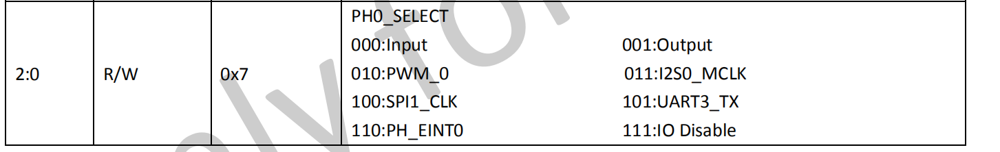

MaixII M2dock PWM 调试
PWM介绍
PWM（Pulse Width Modulation）控制——脉冲宽度调制技术，通过对一系列脉冲的宽度进行调制，来等效地获得所需要波形（含形状和幅值）.PWM控制技术在逆变电路中应用最广，应用的逆变电路绝大部分是PWM型，PWM控制技术正是有赖于在逆变电路中的应用，才确定了它在电力电子技术中的重要地位。V831的PWM功能是由硬件产生的,所以我们只用配置好硬件寄存器即可.芯片寄存器请参考V833／V831 Datasheet V1.0.pdf.
V831 Dock PWM 引脚
如下图所示,V831有8个引脚可以输出PWM波,但是由于复用关系,我们并不能随心所欲的使用这8个引脚.所以我们要注意他们的复用关系,以PH0为例,但是这个引脚被SPI功能所占用,所以我们使用时,需要改变PWM功能所在引脚的复用功能才能正常使用PWM功能.能够被我们正常使用的功能引脚是PH6、PH7 和 PH8引脚,其他引脚使用时需要注意引脚复用关系.如需一定要使用,请参考 改变引脚复用关系.

| PIN Number | PIN | function | 设备树配置 | 功能 | 备注 |
|---|---|---|---|---|---|
| 238(224+14) | PH14 | SPI1_CS0TWI3_SDAPH_EINT14 | State_LED | ||
| --- | --- | --- | --- | ||
| 166(160+6) | PF6 | PF_EINT6 | |||
| RST | |||||
| 199(192+7) | PG7 | UART1_RXPG_EINT7 | |||
| 198(192+6) | PG6 | UART1_TXPG_EINT6 | |||
| 236(224+12) | PH12 | JTAG_CKRMII_TXENSPI1_MOSITWI2_SDAPH_EINT12 | TWI2_SDA | ||
| 235(224+11) | PH11 | JTAG_MSRMII_TXCKSPI1_CLKTWI2_SCKPH_EINT11 | TWI2_SCK | ||
| 238(224+14) | PH14 | JTAG_DIMDIOSPI1_CS0TWI3_SDAPH_EINT14 | |||
| 237(224+13) | PH13 | JTAG_DOMDCSPI1_MISOTWI3_SCKPH_EINT13 | |||
| 234(224+10) | PH10 | RMII_TXD0TWI3_SDAUART0_RXPH_EINT10 | |||
| CPUX-RX | |||||
| UART0-TX | PWM_9RMII_TXD1TWI3_SCKUART0_TXPH_EINT9 | ||||
| --- | --- | --- | --- | ||
| GND | |||||
| 5V | |||||
| 230(224+6) | PH6 | PWM_6RMII_RXD0TWI2_SDAUART2_RXPH_EINT6 | |||
| 231(224+7) | PH7 | PWM_7RMII_CRS_DVUART0_TXUART2_RTSPH_EINT7 | |||
| 232(224+8) | PH8 | PWM_8RMII_RXERUART0_RXUART2_CTSPH_EINT8 | |||
| GPADC0 | |||||
| 224(224+0) | PH0 | PWM_0I2S0_MCLKSPI1_CLKUART3_TXPH_EINT0 | SPI1_CLK | ||
| 225(224+1) | PH1 | PWM_1I2S0_BCLKSPI1_MOSIUART3_RXPH_EINT1 | SPI1_MOSI | ||
| 226(224+2) | PH2 | PWM_2I2S0_LRCKSPI1_MISOUART3_CTSPH_EINT2 | SPI1_MISO | ||
| 227(224+3) | PH3 | PWM_3I2S0_DOUTSPI1_CS0UART3_RTSPH_EINT3 | SPI1_CS0 |
PWM LED 测试
使用 sysfs 操作 PWM 的例子：
#首先打开PWM6通道
cd /sys/devices/platform/soc/300a000.pwm/pwm/pwmchip0
root@sipeed:/sys/devices/platform/soc/300a000.pwm/pwm/pwmchip0# echo 6 > export
root@sipeed:/sys/devices/platform/soc/300a000.pwm/pwm/pwmchip0# ls
device export npwm pwm6 subsystem uevent unexport
#设置PWM周期
cd /sys/devices/platform/soc/300a000.pwm/pwm/pwmchip0/pwm6
root@sipeed:/sys/devices/platform/soc/300a000.pwm/pwm/pwmchip0/pwm6# echo 1000000 > period
#设置PWM占空比
root@sipeed:/sys/devices/platform/soc/300a000.pwm/pwm/pwmchip0/pwm6# echo 10000 > duty_cycle
#开启PWM功能
root@sipeed:/sys/devices/platform/soc/300a000.pwm/pwm/pwmchip0/pwm6# echo 1 > enable
#用示波器或者LED灯观察PH0端口是否有PWM波输出
Python-PWM
import time
from maix import pwm
import signal
def handle_signal_z(signum,frame):
print("APP OVER")
exit(0)
signal.signal(signal.SIGINT,handle_signal_z)
with pwm.PWM(6) as pwm6:
pwm6.period = 1000000
pwm6.duty_cycle = 10000
pwm6.enable = True
duty_cycle = 10000
while True:
for i in range(1,10):
pwm6.duty_cycle = 10000 * i
time.sleep(1)
V831 Dock 改变引脚复用关系
以PH0为例,查询v831的datasheet手册我们能得到:


0x0300B0FC寄存器的最低三位是控制PH0的引脚复用关系的,我们通过linux指令进行查看该寄存器中的值.
root@sipeed:/sys/class/sunxi_dump# ls
compare dump rw_byte write
root@sipeed:/sys/class/sunxi_dump# echo 0x0300B0FC > dump
root@sipeed:/sys/class/sunxi_dump# cat dump
0x77114444
由寄存器中的值我们知道最低两位是00,为此我们改变最低位的值,然后再写回去.
root@sipeed:/sys/class/sunxi_dump# echo 0x0300B0FC 0x77114442 > write
root@sipeed:/sys/class/sunxi_dump# cat dump
0x77114442
修改成功后,我们就可以正常使用PWM0通道的PWM波输出了.
#使用PWM0的python3模块,使用其他复用引脚可以参考该写法
#import PWM就可以使用
"""Linux PWM driver sysfs interface"""
import os
import struct
__author__ = 'Scott Ellis'
__version__ = '1.0'
__license__ = 'New BSD'
__copyright__ = 'Copyright (c) 2016 Scott Ellis'
from types import (
TracebackType,
)
from typing import (
Optional,
Type,
)
class PWM(object):
"""
A class to work with the Linux PWM driver sysfs interface
"""
def __init__(self, channel: int = 0, chip: int = 0) -> None:
""" Specify channel and chip when creating an instance
The Linux kernel driver exports a sysfs interface like this
/sys/class/pwm/pwmchip<chip>/pwm<channel>
A <chip> can have multiple <channels>.
The channel and chip are determined by the kernel driver.
For example the two PWM timers from the RPi kernel driver
show up like this
/sys/class/pwm/pwmchip0/pwm0
/sys/class/pwm/pwmchip0/pwm1
To use the RPi timers create instances this way
pwm0 = PWM(0) or PWM(0,0)
pwm1 = PWM(1) or PWM(1,0)
"""
self._channel = channel
self._chip = chip
self.base = '/sys/class/pwm/pwmchip{:d}'.format(self._chip)
self.path = self.base + '/pwm{:d}'.format(self._channel)
#调整引脚复用功能
with open("/sys/class/sunxi_dump/dump","wb") as f:
f.write(b'0x0300B0FC')
with open("/sys/class/sunxi_dump/dump","rb") as f:
self.gpio = f.read()
self.gpio = self.gpio[:-1]
with open("/sys/class/sunxi_dump/write","wb") as f:
gpio_H0 = int(self.gpio,16)
gpio_H0 &= ~0x00000007
gpio_H0 |= 0x00000002
gpio_io = b'0x0300B0FC ' + bytes(hex(gpio_H0), 'ascii')
f.write(gpio_io)
if not os.path.isdir(self.base):
raise FileNotFoundError('Directory not found: ' + self.base)
# enable class as a context manager
def __enter__(self) -> 'PWM':
self.export()
return self
def __exit__(self,
exc_type: Optional[Type[BaseException]],
exc_value: Optional[BaseException],
traceback: Optional[TracebackType]) -> None:
self.enable = False
self.inversed = False
self.unexport()
#还原引脚复用功能
with open("/sys/class/sunxi_dump/dump","wb") as f:
f.write(b'0x0300B0FC')
with open("/sys/class/sunxi_dump/dump","rb") as f:
self.gpio_o = f.read()
self.gpio_o = self.gpio[:-1]
with open("/sys/class/sunxi_dump/write","wb") as f:
gpio_H0 = int(self.gpio,16)
gpio_H0 &= 0x00000007
gpio_H0_o = int(self.gpio_o,16)
gpio_H0_o &= ~0x00000007
gpio_H0_o |= gpio_H0
gpio_io = b'0x0300B0FC ' + bytes(hex(gpio_H0_o), 'ascii')
f.write(gpio_io)
return
def export(self) -> None:
"""Export the channel for use through the sysfs interface.
Required before first use.
"""
if not os.path.isdir(self.path):
with open(self.base + '/export', 'w') as f:
f.write('{:d}'.format(self._channel))
def unexport(self) -> None:
"""Unexport the channel.
The sysfs interface is no longer usable until it is exported again.
"""
if os.path.isdir(self.path):
with open(self.base + '/unexport', 'w') as f:
f.write('{:d}'.format(self._channel))
@property
def channel(self) -> int:
"""The channel used by this instance.
Read-only, set in the constructor.
"""
return self._channel
@property
def chip(self) -> int:
"""The chip used by this instance.
Read-only, set in the constructor.
"""
return self._chip
@property
def period(self) -> int:
"""The period of the pwm timer in nanoseconds."""
with open(self.path + '/period', 'r') as f:
value = f.readline().strip()
return int(value)
@period.setter
def period(self, value: int) -> None:
with open(self.path + '/period', 'w') as f:
f.write('{:d}'.format(value))
@property
def duty_cycle(self) -> int:
"""The duty_cycle (the ON pulse) of the timer in nanoseconds."""
with open(self.path + '/duty_cycle', 'r') as f:
value = f.readline().strip()
return int(value)
@duty_cycle.setter
def duty_cycle(self, value: int) -> None:
with open(self.path + '/duty_cycle', 'w') as f:
f.write('{:d}'.format(value))
@property
def enable(self) -> bool:
"""Enable or disable the timer, boolean"""
with open(self.path + '/enable', 'r') as f:
value = f.readline().strip()
return True if value == '1' else False
@enable.setter
def enable(self, value: bool) -> None:
with open(self.path + '/enable', 'w') as f:
if value:
f.write('1')
else:
f.write('0')
@property
def inversed(self) -> bool:
"""normal polarity or inversed, boolean"""
with open(self.path + '/polarity', 'r') as f:
value = f.readline().strip()
return True if value == 'inversed' else False
@inversed.setter
def inversed(self, value: bool) -> None:
with open(self.path + '/polarity', 'w') as f:
if value:
f.write('inversed')
else:
f.write('normal')